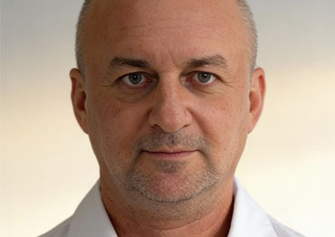
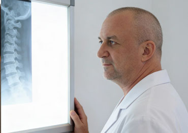

Я врач травматолог-ортопед с большим опытом
Моя специализация — лечение боли в позвоночнике и суставах, восстановление функции опорно-двигательного аппарата.
Боль в спине и суставах — работаем с причиной, а не с симптомом.
Моя специализация — лечение боли в позвоночнике и суставах, восстановление функции опорно-двигательного аппарата.
В практике применяю авторскую методику Лечебная Деимпульсация: она воздействует на ключевое звено боли и уменьшает факторы, которые ее поддерживают.
Как формируется боль, почему важно искать причину, в каких ситуациях методика дает наилучший эффект и как выглядит понятный план лечения.

Основная причина неэффективного лечения боли в позвоночнике и суставах заключается в том, что устраняют симптом, а не источник боли.
ПодробнееМетод Лечебной деимпульсации позволяет быстро устранить источник боли и снять воспаление.
ПодробнееПри болях в спине и суставах человек хочет не временное облегчение, а состояние, в котором можно спокойно двигаться и не думать о боли каждый день.
Подробнее
Основная причина неэффективного лечения боли в позвоночнике и суставах заключается в работе с симптомами, а не с источником боли.
ПодробнееБольше интересных постов доступно в Telegram
Прием проводится в Москве и в Сочи по предварительной записи.